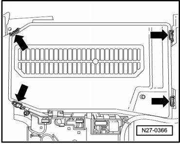
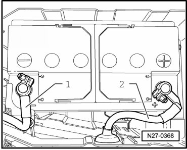

Battery, One-Battery Layout, Disconnecting and Connecting
Battery, One-Battery Layout, Disconnecting and Connecting
CAUTION!
Risk of injury. Observe warning notes and safety precautions --> [ Warnings and Safety Precautions ] Vehicle Damage Warnings
Battery - dual battery system, disconnecting and reconnecting --> [ Battery, with Auxiliary Battery or Two-Battery Layout, Disconnecting
and Connecting ] Battery, with Auxiliary Battery or Two-Battery Layout, Disconnecting and Connecting.
A maintenance-free battery with visual indicator is factory-installed beneath left front seat.
Special tools, testers and auxiliary items required
• Torque Wrench (V.A.G 1331/)
Battery, disconnecting:
• To disconnect battery, anti-theft warning system must be deactivated --> [ Anti-Theft Alarm System, Activating and Deactivating ] Anti-Theft Alarm System, Activating and Deactivating.
• Always ensure the vehicle electrical system is protected by disconnecting the battery negative (-) terminal (interrupted current flow to ground) prior to servicing key areas of the electrical system as specified in this Repair information. Disconnecting the battery positive (B+) terminal must only be performed as required to remove battery from vehicle, and must only be carried out after the negative (-) terminal is disconnected. However, observe notes for connecting battery in any case.
- Switch off ignition, switch off all electrical consumers and remove ignition key.
- Remove the left front seat rail cover.
- Remove the left front seat trim
- Remove screws - arrows -.

- Tilt seat frame and seat to rear - arrow -.

- Remove screw - 1 - and remove air guide - 2 -.

- Open battery box clips - arrows - and remove cover.

- Disconnect negative (-) terminal - 1 - from battery.

- Disconnect positive (B+) terminal - 2 - from battery.
Battery, reconnecting:
CAUTION!
In order to prevent damage to battery housing, battery terminals must be placed on battery posts without using force (by hand only).
Battery terminals must not be greased.
- Refit battery positive (B+) terminal - 2 - on battery positive post.
- Tighten the battery positive terminal bolt to the specification --> [ Battery ] Battery.
- Only after the positive (B+) terminal has been secured should negative (-) terminal clamp - 1 - be installed.
- Tighten negative terminal clamp screw to specified torque --> [ Battery ] Battery.
- Replace seat frame bolts - arrows - and tighten them to the specification --> [ Battery ] Battery.
- Install left front seat rail cover.
- Install left front seat trim
- Perform work steps according to table: --> [ After Connecting Battery, through 11.06 ] Battery, with Auxiliary Battery or Two-Battery Layout, Disconnecting and Connecting.